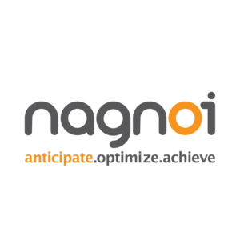

- Worked in Front-End Development for Nagnoi's CMS for Healthcare.
I've had the privilege of working in various roles across different industries. I've worked roles spanning Data Science, Full Stack Development, and Business Intelligence.

- Worked in Front-End Development for Nagnoi's CMS for Healthcare.
- Used AWS-Redshift, PostgreSQL, and DataGrip to query and analyze a wide variety of large datasets.
- Wrote SQL code to build, maintain, and schedule data pipelines for analytics used in Amazon's Global Transportation Technology Services (GTTS) team.
- Created a database schema and built a QuickSight dashboard to monitor transportation configuration KPI metrics and alert Product Managers across GTTS.

- Optimized data-gathering code with Ruby to examine >50k server checkpoints and compliance standards.
- Wrote queries using PostgreSQL to connect multiple relations and further analyze how managers are properly using their local business team application.
- Developed a Power BI dashboard to demonstrate outliers and group/label data for future compliance updates in business apps.
- Worked on historical transaction data using Jupyter Notebooks for user analytics and visualization.
- Performed multiple statistical tests on gathered data for algorithm improvement and outlier detection.
- Coded Python scripts for data labelling, cleaning, and extraction for predictive tendency models for hundreds of users.
- Used Python libraries: Pandas, Matplotlib, CSV, Numpy, Scipy.Stats, and Seaborn